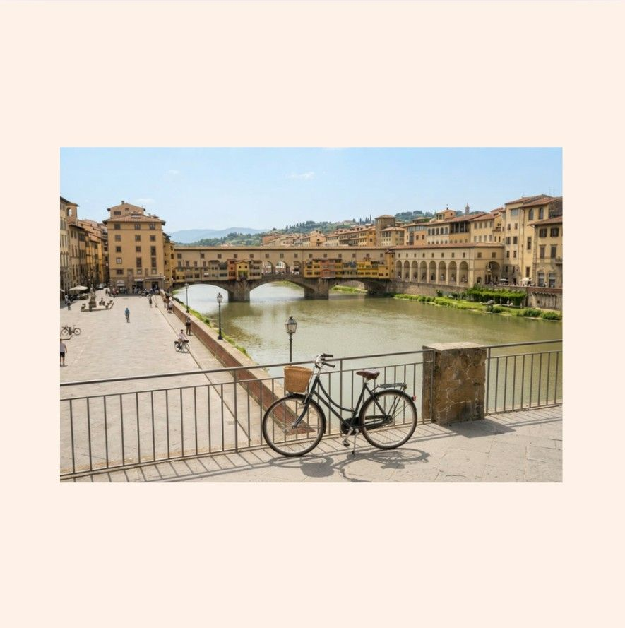

Journey 06 · Firenze Note 7 of 11 Field Note
A Woman on a Bicycle
Inspired by a story from Carolotta Ferrari

The bicycle moves through Florence,
and the city turns around it.
Not the Florence that counts visitors like coins, measuring worth in euros and photos. Not the Florence of timed tickets, camera straps, and gelato held up against a backdrop of old churches and blue skies.
Another Florence. The one that wakes early, opens shutters, hangs laundry, unlocks shop doors, and knows who has been sleeping badly.
The wheels turn. The city shifts.
A woman rides down cobbled streets with her child, past stone walls and old doors, past women who have known each other long enough to understand whole sentences from a look.
A nonna takes the baby.
Another brings food.
Another notices when the light stays on too late
and worries the way only a woman
who has worked too hard her whole life can worry.
The wheels turn. The city shifts.
A friend takes the toddler.
Another brings wine.
More come on the weekend, with stories and laughter and tired bodies, and they sit at the table together and remind her of who she is.
The wheels turn. The city shifts.
She balances her life like she balances her bike. Her hands hold the bars. Her feet push the pedals. Her body knows the lean, the turn, the weight of the child behind her.
But no woman moves with balance alone.
The city reaches out.
It reaches out with old hands. Tired hands. Skilled hands. Hands that cook, carry, steady, wave, open, lift. Hands that have held babies, bags, grief, bread, keys, flowers, phones, and the invisible weight of other people’s lives.
The wheels turn. A thousand hands hold her steady on her path. The city shifts.
A woman rides forward with her child, held up by more than balance
She does not have to say she is not alone.
The city has already answered.
Mentioned in
Originally published at fieldnotesfromabroad.com/2026/05/20/a-woman-on-a-bicycle/